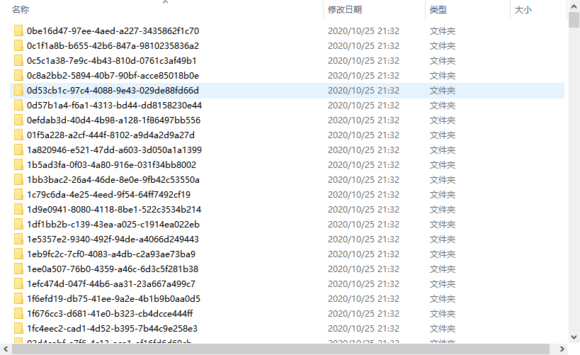
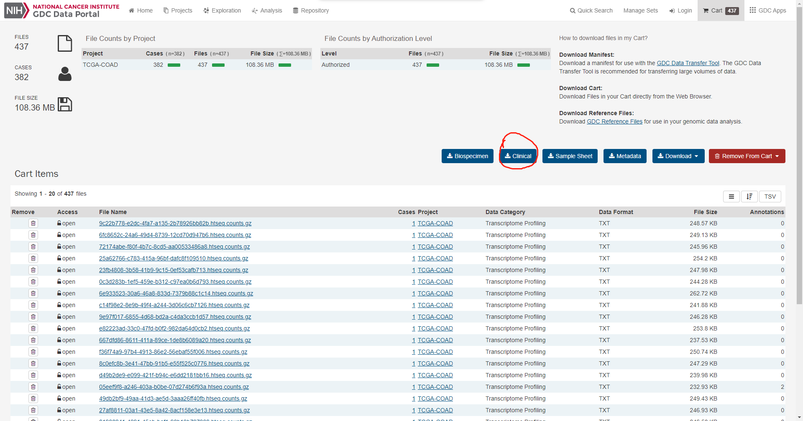
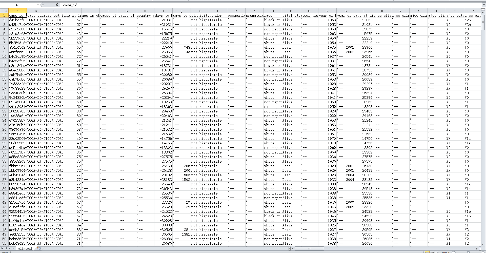
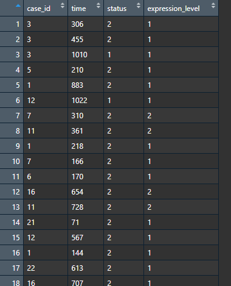
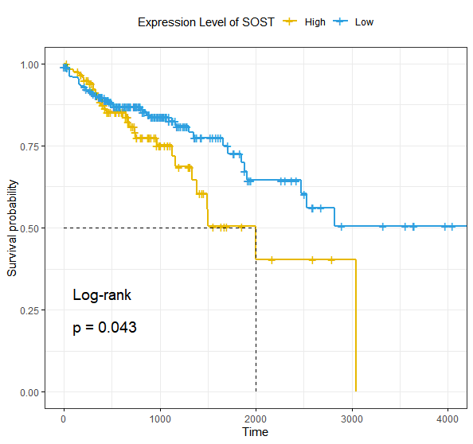

利用TCGA的mRNA表达数据做生存分析
Jiacheng Leng / 2020-11-02
- 数据下载
可以从各大网站寻找方法，本文重点在于得到数据后的分析。 这一步之后应到得到的数据有：- 基因表达数据
 这一步需要用程序批量处理整合成表达矩阵，并且注意区分正常样本和病变样本。
- clinical临床数据

数据结构如图：

- 基因表达数据
- 数据整理
这一步我们需要至少从中提取出4个变量提供给下游分析，分别是病例ID，生存状态，以及与生存时间相关的两个变量。具体变量的解释可以查看官方文档。
clinical.data <- read.csv('../Realdata/clinical.tsv', sep = '\t')
clinical.data.select <-
clinical.data[, c('case_submitter_id',
'vital_status',
'days_to_death',
'days_to_last_follow_up')]- 病例ID用来和表达数据一一对应，并且同时得到目标基因的表达水平，高于均值为高表达，记为1，反之0；
- 生存状态用判断是否为删失数据，记censored=1，dead=2；
- 生存时间就是横轴信息；
得到的数据结构如图：

其中case_id应该为TCGA的ID。
- 生存分析
library('survival')
library('survminer')
fit <- survfit(Surv(time, status) ~ expression_level , data = clinical.data.select)
ggsurvplot(fit,
pval = TRUE,
pval.method = TRUE,
surv.median.line = "hv", # Specify median survival
ggtheme = theme_bw(), # Change ggplot2 theme
palette = c("#E7B800", "#2E9FDF") ,
legend.labs =
c("High", "Low"), # change legend labels.
legend.title = paste0('Expression Level of ',target.gene)
)结果如图：
